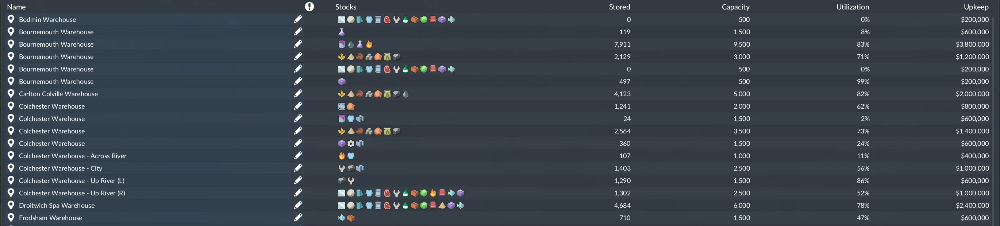
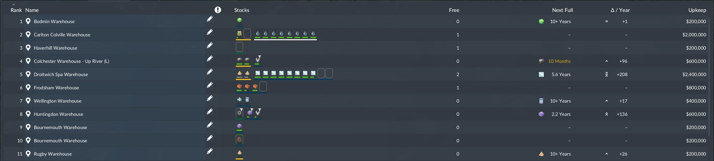
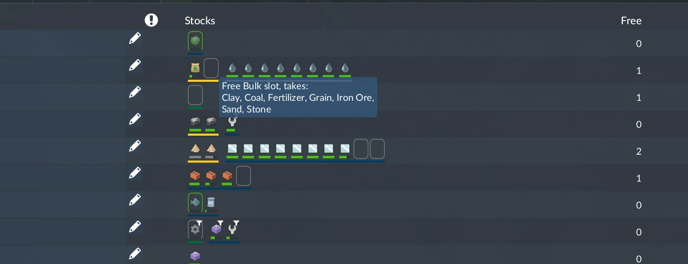
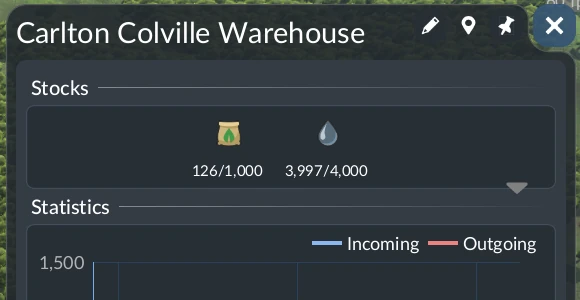
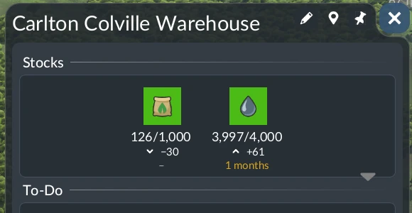
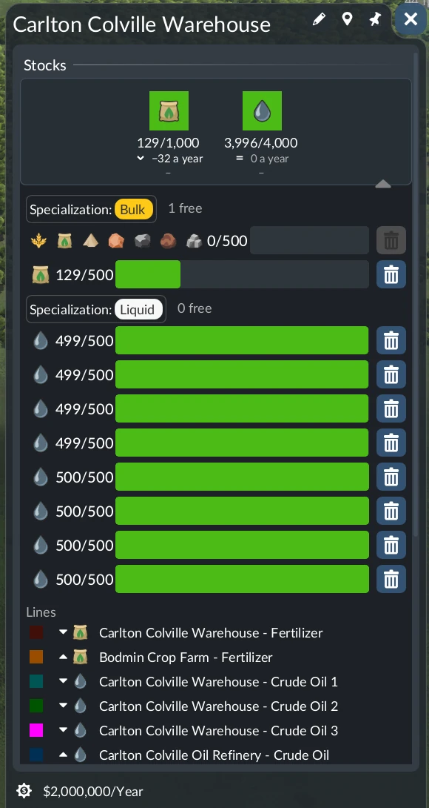

Warehouse Enhancements
A warehouse stores cargo in slots of 500, one cargo per slot, but the game adds them all together: a warehouse can read 40 % while one cargo is full and can't be unloaded. This mod shows each slot, which cargo your lines bring, and which cargo needs action first.
A warehouse has one slot of 500 per module. Each slot has a kind, such as Bulk, Goods or Liquid, and holds one cargo at a time. An empty slot takes any cargo of its kind, unless you pin it to one cargo in the warehouse window.
The mod works out each cargo's room from its own slots and the free slots that take it, and reads which of your lines unload or load at the warehouse now. An empty slot that a line's cargo will need is held for that cargo, so it doesn't count as free.
Statistics Warehouses Tab
Setting: Statistics Warehouses Tab · On by defaultA save with 17 warehouses, the game's table sorted by name. Carlton Colville Warehouse reads 82 % in the game; with the mod, its crude oil fills up next.

- 1Stocks lists every cargo the warehouse could take, stored or not.
- 2Stored, Capacity and Utilization add all slots together: Carlton Colville reads 82 %.

- 1A tile per slot, grouped by kind: a fertilizer slot, a free Bulk slot and eight crude oil slots. Green bars: a line unloads that cargo here now.
- 2Next Full: the cargo to act on first. Coal at Colchester Warehouse - Up River (L) is full in 10 months, so it is yellow.
- 3That cargo's change over the last year: 96 more brought in than taken out.
- 4Free: slots no cargo is held for, two at Droitwich Spa.

- 1Slots are grouped by kind, with the kind's colour underneath: yellow for Bulk.
- 2Hover a tile for what it holds or takes: this free Bulk slot takes any of seven cargos.
- 3Grey outlines: two free slots, counted under Free.
- 4A filter icon marks a slot pinned to one cargo.
Why
The statistics window's Warehouses tab lists every cargo a warehouse could take and adds all its slots into one Stored, Capacity and Utilization. A warehouse reads 82 % while its crude oil has room for 3 more, and nothing in the table says which cargo is about to fill up.
What it does
Each warehouse's slots show as a strip of tiles, grouped by kind. Free counts the free slots no cargo is held for, Next Full names the cargo that needs action first, and the arrow column shows that cargo's change over the last year. Problems get a mark in the Problems column.
Good to know
- A tile is green when one of your lines unloads that cargo there now, grey when none does, and red when the cargo is full.
- An outlined tile is a free slot, or one held for a cargo a line brings that is out of stock right now. A filter icon marks a pinned slot.
- Next Full, most urgent first: No slot, Shared slot (two cargos want the last free slot), None brought (lines come to load a cargo nothing brings), Full, Pin unused (a pinned slot nothing is brought to), then the time until full, yellow within a year.
- The time until full counts only cargo one of your lines brings now.
- Sort by Next Full, largest first, to put the warehouses that need action at the top. Click a Problems mark to open the warehouse.
Warehouse Stocks Card
Setting: Warehouse Stocks Card · On by defaultCarlton Colville Warehouse, same save: crude oil has room for 3 more and fills up within a month.

- 1The game shows what is stored and the room: no trend, no time until full.

- 1Green: one of your lines unloads this cargo here now.
- 2Crude oil: 3,996 of 4,000 stored and no change over the last year, so a dash stands where the time until full would be.
- 3Fertilizer falls by 32 a year, so it has no time until full either.

- 1Each kind counts its free slots, and names the cargo a held slot waits for.
- 2A slot's bar is green while a line unloads its cargo here, grey when none does, red once it is full.
- 3The lines that unload here (arrow down) or load here (arrow up). Click one to open it.
Why
The warehouse window's Stocks card shows how much of each cargo is stored and its room, but not whether it is rising, when it will be full, or which of your lines bring it. A cargo out of stock right now isn't listed, though its next delivery needs a slot.
What it does
For each cargo, the card shows its room, its change over the last year, the time until full, and whether a line unloads it there. Expanded, the slot list says which slot is held for which cargo and ends with the lines that unload or load at the warehouse.
How to use
- Open a warehouse: the cargo columns show at once.
- Expand the Stocks card for the slot list and the lines. Click a line to open it.
Good to know
- A cargo's icon is green when a line unloads it there now and red on a problem: no slot left, a pinned cargo nothing is brought to, or a cargo lines come to load that nothing brings. Hover it for the reason.
- When two cargos need the last free slot, both show in red, since whichever line arrives first takes it.
- A held slot names the cargo it is held for. Click that cargo's icon to pin the slot to it.
- A cargo with no slot left gets a red row in the slot list, with the lines that bring it.
- The cargo columns also show for warehouses that aren't yours; the slot list, as in the game, only for your own.
Settings
Choosing a save's mods: the gear next to Warehouse Enhancements → Settings. Each save keeps its own choice. Off turns a feature off completely.
| Setting | Default | What it does |
|---|---|---|
| Warehouse Stocks Card | On | The warehouse window's Stocks card shows each cargo's room, change a year and time until full, slots held for cargo a line brings, and the lines that unload or load there. |
| Statistics Warehouses Tab | On | The statistics Warehouses tab shows each warehouse's slots, its free slots, the cargo that fills first and its change a year, and marks as a problem a cargo that is full or may find no slot, a cargo lines load there that nothing brings, and a slot pinned to a cargo nothing brings. |
| Logging | Off | Writes the mod's messages to the game log (stdout.txt), for bug reports. |
More
Compatibility
Works alongside Cargo Enhancements, whose Consumers and Suppliers card shares the warehouse window, To-Do List, and Statistics Enhancements, whose Rank column shows in the Warehouses tab too.